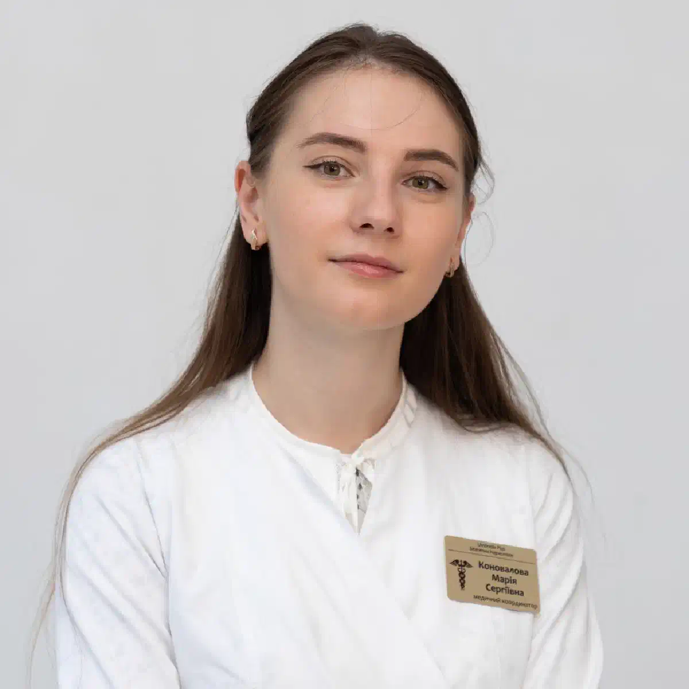

+38(068)
79 72 782
+38(068)
79 72 782Капельница от алкоголя в Шевченковском районе Харькова
Анонимная наркологическая помощь на дому


Бесплатная консультация, работаем круглосуточно 24/7
Анонимная наркологическая помощь на дому

Дата написания: 13 окт. 2026 г.
Последнее обновление: 13 окт. 2026 г.
Капельница от алкоголя в Шевченковском районе Харькова — медицинская процедура, которая может применяться при обезвоживании, нарушениях водно-электролитного баланса и других осложнениях после употребления спиртных напитков. Длительный запой нередко сопровождается тошнотой, слабостью, тремором рук, повышенным давлением, тревожностью и нарушениями сна. Капельница от алкоголя на дому в Харькове проводится по медицинским показаниям после осмотра врача. Выездная помощь может быть доступна жителям Павлова Поля, Алексеевки, проспекта Науки и других частей Шевченковского района. При тяжёлой алкогольной абстиненции требуется специализированное лечение, а иногда и госпитализация.
Капельница от алкоголя представляет собой внутривенное введение растворов для коррекции нарушений, возникших после употребления спиртного. Инфузионная терапия может назначаться при обезвоживании, электролитных расстройствах и невозможности восполнить жидкость обычным питьём. Наркологическая помощь в Шевченковском районе Харькова начинается с осмотра пациента, измерения давления, пульса и оценки общего состояния. Врач определяет показания к капельнице, её состав и необходимый объём. При тяжёлой абстиненции, судорогах или нарушениях сознания требуется стационарное лечение.
Капельница от алкоголя на дому может потребоваться при выраженном обезвоживании, многократной рвоте и нарушениях водно-электролитного баланса. При этом слабость, головная боль или плохое самочувствие после алкоголя не всегда являются показаниями к инфузии. Врач должен исключить тяжёлую интоксикацию, алкогольную абстиненцию и сердечно-сосудистые осложнения. Вызов нарколога на дом в Харькове позволяет оценить состояние пациента и выбрать безопасную тактику лечения. При нестабильных показателях или высоком риске осложнений необходима госпитализация.
После употребления большого количества алкоголя могут появляться головная боль, тошнота, рвота, головокружение, сухость во рту и выраженная слабость. Обезвоживание сопровождается жаждой, уменьшением количества мочи и учащённым сердцебиением. Тремор рук, тревога, потливость и бессонница после прекращения употребления спиртного могут свидетельствовать об алкогольном абстинентном синдроме. При потере сознания, судорогах, выраженной спутанности или нарушениях дыхания необходима скорая помощь при алкогольном отравлении и других неотложных состояниях.
Вызов нарколога на дом в Шевченковском районе Харькова позволяет организовать медицинский осмотр без самостоятельного посещения клиники. Перед обращением желательно сообщить возраст пациента, продолжительность запоя, время последнего употребления алкоголя, основные симптомы и наличие хронических заболеваний. После прибытия врач оценивает состояние, измеряет жизненно важные показатели и определяет необходимость лечения. Срочный вызов нарколога в Харькове может быть доступен жителям Алексеевки, Павлова Поля и района проспекта Науки. При признаках неотложного состояния необходимо вызвать скорую помощь по номеру 103.
Конфиденциальность является важным условием обращения за наркологической помощью. Пациенты могут опасаться разглашения информации об употреблении алкоголя или последствий для профессиональной деятельности. Анонимная капельница от алкоголя в Харькове предполагает соблюдение медицинской тайны и правил защиты персональных данных. Возможность обслуживания без определённых форм регистрации зависит от законодательства и условий медицинского учреждения. Анонимная наркологическая помощь на дому может включать консультацию, обследование и назначение лечения при наличии показаний.
Перед инфузионной терапией нарколог уточняет продолжительность употребления алкоголя, основные жалобы, принимаемые препараты и сопутствующие заболевания. Во время осмотра измеряются давление, пульс, сатурация кислорода, температура тела и частота дыхания. Оцениваются сознание, выраженность тремора и признаки обезвоживания. При необходимости проводятся ЭКГ и лабораторные исследования. Консультация нарколога в Харькове помогает определить показания к капельнице и исключить состояния, требующие госпитализации.
Жители Павлова Поля, Алексеевки и других частей Шевченковского района могут обращаться за выездной наркологической помощью при осложнениях после употребления спиртного. Капельница от алкоголя на Павловом Поле и капельница от алкоголя на Алексеевке проводятся только после врачебного осмотра и определения медицинских показаний. Выездная помощь также может быть доступна жителям проспекта Науки, улицы Клочковской и районов станций метро «Ботанический сад» и «23 Августа». Возможность обслуживания зависит от конкретного адреса и условий работы медицинской службы.
После обследования врач подбирает инфузионный раствор, его объём и скорость введения. Процедура проводится с использованием стерильных материалов и соблюдением правил медицинской безопасности. Во время инфузии контролируются самочувствие пациента, давление, пульс и другие показатели по необходимости. Продолжительность зависит от назначенного лечения. Постановка капельницы от алкоголя на дому в Харькове должна выполняться квалифицированным медицинским специалистом. После процедуры врач оценивает результат и предоставляет рекомендации по дальнейшему наблюдению.
Состав капельницы от алкоголя определяется индивидуально. При обезвоживании могут применяться изотонические кристаллоидные растворы, включая раствор натрия хлорида или сбалансированные электролитные растворы. При выявленных нарушениях проводится коррекция электролитов, а при риске дефицита витамина B1 назначается тиамин. Глюкоза используется только при соответствующих показаниях. Универсальной схемы капельницы не существует. Внутривенные растворы не ускоряют существенно выведение алкоголя и не заменяют лечение алкогольной зависимости.
После трёх дней употребления алкоголя пациент может испытывать тошноту, слабость, головную боль, тревожность и нарушения сна. У некоторых людей развивается обезвоживание, у других появляются признаки алкогольной абстиненции. Капельница после трёхдневного запоя назначается при наличии показаний, а не только на основании продолжительности употребления. Врач оценивает состояние пациента, наличие хронических заболеваний и риск осложнений. Вывод из запоя на дому в Харькове возможен при неосложнённом состоянии и наличии безопасных условий наблюдения.
После пяти-семи дней употребления спиртного могут возникать выраженная слабость, бессонница, тремор, тошнота и учащённое сердцебиение. Тяжесть состояния зависит от количества алкоголя, особенностей организма и предыдущих эпизодов абстиненции. Капельница после длительного запоя проводится только после обследования. Особого внимания требуют пациенты с заболеваниями сердца, ранее перенесёнными судорогами и алкогольным делирием. Лечение длительного запоя в Харькове может включать медикаментозную терапию, коррекцию обезвоживания и стационарное наблюдение при наличии показаний.
Алкогольная абстиненция развивается после прекращения или значительного уменьшения употребления спиртного у людей с физической зависимостью. Основные проявления включают тремор, потливость, тревожность, тахикардию, повышение давления и бессонницу. Капельница при алкогольной абстиненции может использоваться для коррекции обезвоживания и других выявленных нарушений, но не является основным лечением синдрома отмены. Лечение алкогольного абстинентного синдрома в Харькове направлено на облегчение симптомов и предупреждение судорог и делирия. При тяжёлой абстиненции необходима госпитализация.
Скорость улучшения зависит от причины симптомов, степени обезвоживания и сопутствующих заболеваний. При восполнении дефицита жидкости могут уменьшаться жажда, головокружение и слабость. Однако капельница от алкогольной интоксикации на дому не гарантирует устранения тремора, тревожности, повышенного давления или бессонницы. При алкогольной абстиненции требуется дополнительное лечение. После процедуры врач оценивает динамику состояния и необходимость дальнейшего медицинского наблюдения.
Противопоказания к капельнице от алкоголя зависят от состава раствора, объёма инфузии и состояния пациента. Особая осторожность необходима при сердечной и почечной недостаточности, отёке лёгких, выраженных электролитных нарушениях и риске перегрузки жидкостью. Домашняя инфузионная терапия не подходит при тяжёлой абстиненции, судорогах, галлюцинациях, нарушениях сознания и дыхания. В подобных ситуациях требуется неотложная медицинская помощь. Самостоятельная постановка капельниц без врачебного контроля может привести к опасным осложнениям.
Наркологический стационар в Харькове необходим при тяжёлой алкогольной абстиненции, судорогах, алкогольном делирии и других осложнениях, требующих постоянного наблюдения. Госпитализация также может потребоваться при серьёзных заболеваниях сердца, печени, почек и нестабильных жизненно важных показателях. Стационарное лечение алкогольной интоксикации позволяет проводить необходимые исследования, медикаментозную терапию и контроль состояния. При судорогах, галлюцинациях, выраженной спутанности или нарушениях дыхания необходимо немедленно вызвать скорую помощь по номеру 103.
Стоимость капельницы от алкоголя в Шевченковском районе Харькова начинается от 2199 грн.
| Популярные услуги | Цена |
|---|---|
| Нарколог Харьков | От 1500 грн |
| Капельница от алкоголя | От 2199 грн |
| Вывод из запоя на дому | От 2199 грн |
| Кодирование от алкоголизма | От 6000 грн |
Чтобы организовать вызов нарколога для капельницы от алкоголя, необходимо связаться с медицинской службой и сообщить возраст пациента, продолжительность употребления спиртного, время последнего приёма алкоголя и основные жалобы. Важно предупредить о хронических заболеваниях, судорогах, нарушениях сознания и принимаемых препаратах. Нарколог на дом в Шевченковском районе Харькова может быть вызван по адресам на Павловом Поле, Алексеевке, проспекте Науки и других улицах района при наличии выездного обслуживания. После осмотра врач определяет необходимость капельницы, лечения абстиненции или госпитализации. При признаках неотложного состояния следует немедленно вызвать скорую помощь по номеру 103.
Телефон для консультации и вызова нарколога на дом в Харькове: +38(050-021-69-57)

Статья проверена экспертом
Богоденко Констянтин
Врач анастезиолог, ординатор
Возможно интересная статья:
Выход из запоя уменьшением дозы алкоголя («лесенкой»)

Капельница от алкоголя может потребоваться при выраженном обезвоживании, многократной рвоте, нарушении водно-электролитного баланса и других осложнениях после употребления спиртных напитков. При длительном запое также необходимо оценить риск алкогольной абстиненции.
Да, это самый эффективный способ. В отличие от таблеток, препараты из капельницы попадают напрямую в кровь, моментально восстанавливая дефицит жидкости, электролитов и снимая головную боль, тремор и тошноту.
Капельница от алкоголя на дому возможна при стабильном состоянии пациента и отсутствии признаков тяжёлых осложнений. Перед процедурой нарколог оценивает сознание, дыхание, артериальное давление, пульс и сопутствующие заболевания. При необходимости проводится ЭКГ. Если обнаруживаются судороги, галлюцинации, нарушения сознания или другие опасные симптомы, требуется экстренная медицинская помощь и возможная госпитализация.
Скорость улучшения самочувствия зависит от степени интоксикации, выраженности обезвоживания, сопутствующих заболеваний и состава назначенной терапии. При наличии показаний восполнение жидкости может облегчить отдельные симптомы уже во время процедуры. Однако капельница после алкоголя не ускоряет существенно выведение этанола из организма и не гарантирует полного восстановления за несколько часов. При алкогольной абстиненции может потребоваться дополнительное лечение.
Состав подбирается индивидуально врачом после осмотра, но стандартно включает:
Постановка капельницы от алкоголя на дому вместе с осмотром и последующим контролем состояния может занимать приблизительно 1–3 часа. Продолжительность самой инфузии зависит от назначенного раствора, необходимого объёма жидкости и реакции пациента. Во время процедуры врач контролирует жизненно важные показатели. При тяжёлой интоксикации или выраженной алкогольной абстиненции одной процедуры может быть недостаточно, поэтому продолжительность лечения определяется индивидуально.
Капельница при запое может использоваться для коррекции обезвоживания и отдельных нарушений, возникших на фоне продолжительного употребления алкоголя. Однако инфузионная терапия не является самостоятельным полноценным лечением запоя. После прекращения употребления спиртного возможно развитие опасного алкогольного абстинентного синдрома. При длительном запое, особенно сопровождающемся судорогами, спутанностью сознания или галлюцинациями, может потребоваться лечение в стационаре.
Возможность проведения капельницы при алкогольном опьянении определяется врачом после оценки состояния пациента. Само наличие алкоголя в организме не является безусловным противопоказанием к инфузионной терапии, однако капельница не обеспечивает быстрого протрезвления. При выраженной сонливости, нарушении дыхания, потере сознания или подозрении на тяжёлое алкогольное отравление необходима экстренная помощь. Самостоятельно проводить инфузии или вводить седативные препараты опасно.
Количество процедур зависит от продолжительности запоя, степени обезвоживания, выраженности абстиненции и сопутствующих заболеваний. В некоторых случаях инфузионная терапия вообще не требуется, а в других необходимы дополнительные медицинские мероприятия. Детоксикация от алкоголя не должна оцениваться только количеством капельниц. Нарколог определяет дальнейшее лечение по состоянию пациента, а при тяжёлой абстиненции рекомендует стационарное наблюдение.
Повышенное артериальное давление и учащённое сердцебиение требуют обязательной медицинской оценки перед инфузионной терапией. Эти симптомы могут быть связаны с алкогольной абстиненцией, обезвоживанием или сердечно-сосудистыми осложнениями. Капельница от алкоголя при высоком давлении не является универсальным способом снижения давления или нормализации пульса. При боли в груди, выраженной одышке, нарушении сознания или других опасных симптомах необходимо вызвать скорую помощь.
Госпитализация при алкогольной интоксикации необходима при тяжёлом нарушении сознания, угнетении дыхания, судорогах, выраженных сердечно-сосудистых осложнениях и подозрении на алкогольный делирий. Опасными признаками также являются галлюцинации, выраженная спутанность сознания и неконтролируемая рвота с обезвоживанием. В таких ситуациях домашняя капельница не обеспечивает необходимого уровня безопасности. Следует немедленно вызвать скорую помощь по номеру 103.
Да. Наркологическая служба UmbrellaPlus оказывает помощь полностью анонимно. Данные пациента не передаются в государственные реестры, на работу или по месту учебы.
Противопоказания и ограничения зависят от состава раствора, объёма инфузии и состояния пациента. Особая осторожность необходима при сердечной и почечной недостаточности, выраженных электролитных нарушениях и других тяжёлых заболеваниях. При нарушении сознания, судорогах или нестабильном состоянии домашняя инфузия может быть небезопасной. Капельница для детоксикации от алкоголя проводится только после осмотра нарколога и определения медицинских показаний.
Чтобы организовать вызов нарколога на дом для капельницы от алкоголя, необходимо связаться с медицинской службой UmbrellaPlus и сообщить возраст пациента, продолжительность употребления спиртного, время последнего приёма алкоголя и основные симптомы. Врач проводит осмотр, оценивает состояние и определяет необходимость инфузионной терапии. При стабильном состоянии помощь может быть оказана на дому.
Анонимно

Ну в хлопців просто золоті руки й світла голова, мене капали Олексій та Владислав, буквально за декілька сеансів я наче заново народився, до цього пив більше 3х тижнів, не міг зупинитись, дуже радий що знайшов саме цих спеціалістів, всім рекомендую
Анонимно
В течение нескольких лет я злоупотреблял алкоголь, что привело к увольнению с работы и вызвало у меня мысли о суициде. Понимая, что такой образ жизни неприемлем, я обратился за помощью в клинику “Амбрела”. Здесь я смог преодолеть свою зависимость от спиртного благодаря заботливым и опытным врачам, а также эффективной системе лечения. Спустя более года я полностью избавился от желания употреблять алкоголь, и теперь моя жизнь вернулась в норму. Я даже не приближаюсь к спиртному! Благодарю врачей клиники “Амбрела” за их помощь и заботу.
Анонимно
Я обращался за помощью в различные клиники, пытаясь избавиться от своей зависимости от алкоголя, но без особых успехов. Никак не мог справиться с желанием прибегнуть к бутылке, пока друг не посоветовал мне обратиться в центр “Амбрелла”. Я записался на прием и был поражен заботливым отношением к пациентам. Уже прошло два года, и теперь я смотрю на алкоголь с абсолютной равнодушием, активно занимаюсь спортом и улучшил отношения в семье. Благодаря центру “Амбрелла” моя жизнь была спасена от алкогольной зависимости!
Анонимно
Хочу выразить свою благодарность врачам из центра алкоголизма “Амбрела” за то, что они буквально спасли мою жизнь. В течение последнего года я сильно увлекался питьем, и все это привело к катастрофическим последствиям. Хотя я ходил на терапевтические сеансы, но безрезультатно. Тогда я нашел адрес клиники “Амбрела” в интернете, изучил отзывы и информацию о центре, и записался на прием. Там мне сразу предложили методику лечения, которая помогла не только справиться с физической ломкой, но и психической зависимостью от алкоголя. Не буду распространяться, скажу только одно - после пребывания в этой клинике я стал другим человеком, и навсегда забыл, что такое привкус алкоголя. Больше меня не тянет на это! Я искренне верю, что в центре “Амбрела” трудятся настоящие целители душ!
Анонимно
После сложного развода мой сын начал подавлять свою обиду и горе употреблением алкоголя. Он старался скрывать это от меня, но я, как мать, почувствовала, что что-то не так. В конечном итоге, ситуация стала критической. Моя знакомая посоветовала мне обратиться в клинику “Амбрела”. Я была приятно удивлена их работой! Они помогли сыну преодолеть очередной период злоупотребления алкоголем, и с тех пор прошел уже более года, и он совсем не пьет.
Анонимно
Благодаря вашей помощи, моя семья была спасена. Я с трудом уговорила мужа начать лечение, и последний каплей был пьяное ДТП. К счастью, в аварии никто не пострадал, но это был для него сигнал к действию. Он наконец согласился пройти курс лечения на дому, в стационар не хотел ложиться. Лечение было трудным, и были моменты, когда срыв был настолько близок, но благодаря вашему центру Амбрелла мы справились с этим.
Анонимно
Для меня эта клиника стала настоящим спасением! Долгое время я упорно отказывался от лечения, уверен был, что со мной все в порядке. Но к счастью, семья уговорила меня попробовать. И сегодня я чувствую себя невероятно счастливым, осознавая, что мне абсолютно не нужен алкоголь. Огромное спасибо за помощь и поддержку, которые я получил здесь! Я благодарен вам за новую возможность жить полноценной и счастливой жизнью!
Анонимно
Выражаю благодарность ребятам, которые оказали мне помощь и не отвернулись. Уже 10 месяцев я остаюсь чистой. Благодарю за то, что помогли найти новый путь в моей жизни.
Номер телефона:
+380 (68) 797 27 82
+380 (50) 021 69 57
Адрес наркологического центра вашего города уточняйте по
телефону
Работаем в: Киеве, Одессе, Львове, Харькове, Днепре,
Запорожье, Черкассах, Чугуеве, Черноморске, Каменском
Telegram: t.me/umbrellaplus
График работы: Круглосуточно